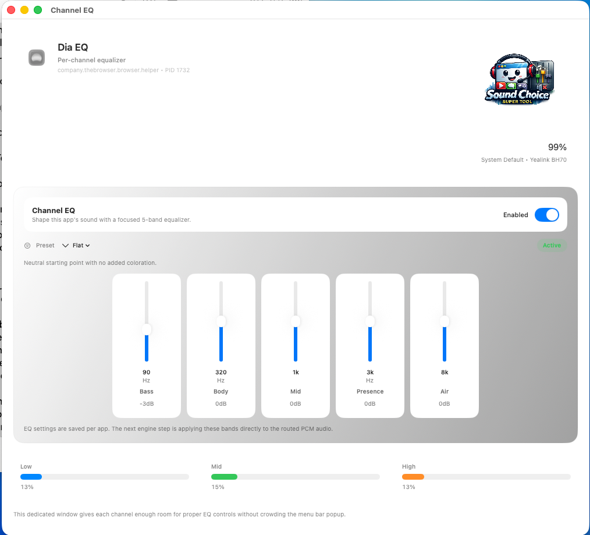
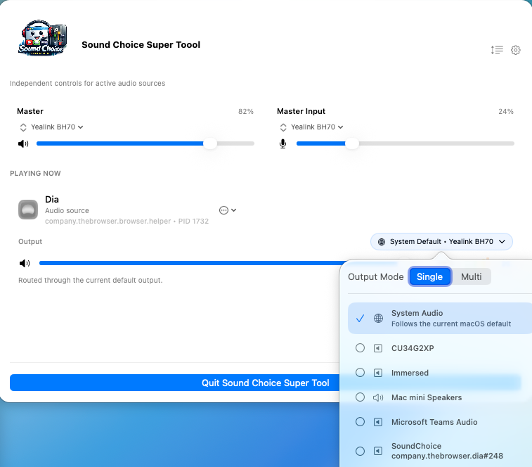

Route sound to multiple outputs
Send audio where you want it instead of being boxed into a simpler system default.

macOS audio routing
A Mac app that gives you more control over where sound goes, how loud each source is, and how reusable your audio setup can become.
Product overview
SoundChoice SuperTool is built for people who want more flexibility than the default Mac audio controls provide, especially when dealing with multiple apps, outputs, and repeatable setups.
Send audio where you want it instead of being boxed into a simpler system default.
Fine-tune individual application volume and source behavior with more precision.
Return to favorite output and mixer setups without rebuilding them each time.
Screenshots and video
This page is ready for screenshots of the mixer, routing panels, and preset management, plus a video showing it in action.

This screenshot shows the focused Channel EQ view with per-channel 5-band controls, live level readouts, and a cleaner dedicated workflow.

This view highlights output routing, audio path control, and the kind of multi-output setup that makes SoundChoice SuperTool especially useful.
Use a video to demonstrate source control, routing, and presets.
Release details
SoundChoice SuperTool is now available in its initial 1.0 release for macOS. The official GitHub release notes are linked here, and the core highlights are summarized below on the page.
Download the current macOS build here or open the official v1.0 release notes on GitHub.
Product Support
Email RDUtilities support for setup questions, troubleshooting, or feedback, and include the product name and version if you can.